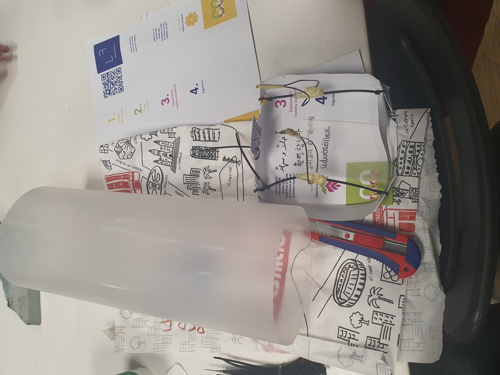
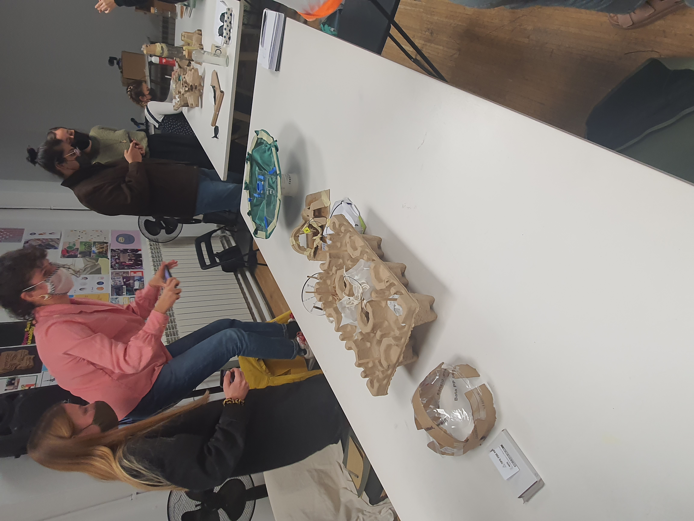

02 November 2021
What is this seminar about?
Kick starting the seminar, we were informed that we are going to externalise our ideas and make sense of things as we do them. Rather than thinking then becoming, we do rapid actioning, then reflect on our speculative makings. Releasing ideas as prototypes gives way for more ideas and learning. The bottom up approach allows me to explore what kind of ideas transpire, moving away from brain thinking and using the tools I have around me to take action using my constituency and ecosystem.
Recap on what I have learnt in the design studio
Using myself as a design tool
The FPP is not seen as hypothesis proofing, rather getting involved in the process and becoming an expert through generative performance. We create a set of possibilities by iterating different, multiple topics. The series of activities can show multiple learnings where many speculations come up in a constant stream of learning. Thinking to solve problems NOW, I am needed to involve other people, expand my set of possibilities where collaboration is a REQUIREMENT.
Expected learnings from the Seminar.
Kristina Anderason Notes: Making creative collaborations.
“ what is complex for our brains, is doable with our bodies, our bodies is our way of understanding complexities.”
Industrial design way of thinking “What else can the machine do” - everything can be a machine. When we design something we have a sense of the one use for it, yet once we put it in the world and question more uses, we can rethink the future of industry and making. We can start thinking design as an orchestrator of situated knowledge of my surroundings. Starting situated knowledge starts by thinking of myself as designing for my lived experience. In this way, designing for myself might work for other people as well.
Do machines have other uses?
Use creativity allowing for strangeness and improvisation, looking for interventions that are outside Use “magic” as a driver to imagine ideas we have not thought of yet. This magic can be physical manifestations of desire of designs we want Using machines that work, offer no reflections, and sameness Design dreams of abstract and difficultness and still make things in this trying world. Design dreams of opposition
Creative collaborations with complex systems
Challenging the edge capabilities, questioning the corpus. We don't have to allow perfection all the time Who are we collaborating with and taking in account that we are not designing in an island. “Where are the other places” you make a machine to make something but we should be conscious what else is turning out as the data How does the material act when it is collected? Hwo do we deal with justice and equalityThe installation is placed in the city where new residents and migrants can participate in putting and voting how their districts can be made better and inclusive. The feeder is also a bird feeder to habilitate the local ecosystem while also having a compartment for gifts that people can take freely and use at home. I am interested int the interests and needs of those who just arrived in spaces, informing experts for collaborative design. Giving out a gift as seeds, food, invitation to a neighbourhood barbeque is my way of enquiry and collaboration. The feeder is written welcome in several languages to acknowledge diaspora groups and inclusivity of different cultures within the community.
Found obsolete material I used to fashion my magical machine
My fellow group members studying each others machines
Reflection and feedback on our group magical machine.
Everytime you speak about the prototype it generated new speculations. Our group’s joint work spoke of environments for meeting , where events may or may not happen. We share ideas on different perceptions and perspectives. The ideations are cyclical and iterative. This is a tool of magical machine making is a means to know more about my group and myself. Every creative cycle and project is situated. I can tune ideations with the material you have around me. The materials and your projections foster the process of making and actions. This shapes your objects and the action of designing creates knowledge and exploration ideations.
Drawing ideas from my Weak signals, I knew I wanted to steer my auto-ethnographic explorations in the direction of investigating the city of Barcelona, social impact and behavioural dynamics in equality. At the same time, I wanted to incorporate a digital aspect as a way to document my findings. The role I decided on doing was documenting the situations of myself walking in Barcelona and using public buildings in the perspective of someone who cannot use stairs. The question I posed was a personal challenge, in the sense of would I be able to find my way as easily if I cannot use stairs. In the video I move from my accomodation to the Fort Pienc library, Arc de Triomf metro station, Psg St Joans, a McDonalds near Plaza Catalunya and lastly the metro station of Plaza Catalunya.
The second part of the exploration entailed 3D scanning situations where I found myself in a stairwell and had to find an alternative route. This idea was to transcend time and space and encapsulating moments in digital realities, blurring the lines between perspective and reality.
I drew inspiration from the Wheelmap found from the Atlas of the Future site. The Map documents routes and areas for wheelchair access in various locations. A question that arose, was how will Barcelona perform for me?
Analysing my FPP intervention to better understand this technique of research
“Auto-ethnography is a research method that uses personal experience to describe and interpret cultural texts, experiences, beliefs, and practices . Autoethnographers believe that personal experience is infused with political/cultural norms and expectations, and they engage in rigorous self reflections” Jörg Matthes
Define the study Boundaries
What were the limits of my study? - The obvious study of accessibility had to be framed outside exterior mobility structures as wheelchair access and raised curbs in the streets already exist and are well done. I had to expand my research spaces. Language and culture barriers to express my needs for an elevator or alternative routes was another limitation. I feel like my study is not complex enough for after a day of study, and extending the research time would reveal more insight and data. I can only give insight for the neighbourhood of El Born, For Pienc and Eixample between 1PM- 3PM time where this context became another limit.
Authenticity- Construct
How is meaning constructed? Was I personally involved? In retrospect, it would've been more meaningful to ask for directions to alternative routes and ask for help in the subway, and Palau Musica so I can add richness to the study in introducing other actors. It would be interesting if I had other people ask about my research. Switching ways of documenting could've added layers of richness to the data. It felt like I was mocking or projecting being handicap, but I realised I should go about my daily experience and errands. Being apprehensive of other people’s opinions of me not using stairs or asking for help and not being independent , gave me a feel of not having my own agency and autonomy.It would’ve added more value to expand the types of interiors I went in and asked other people to document me.
Plausibility / Scholarship- Can my work relate to current research or trends.
Am I able to build something new? Are there gaps in knowledge? Reading the posts from Atlas of the future, I read an article showing a “wheelmap” showing wheelchair friendly routes in the city, yet in my experience, interior areas are also not to be easily accessible. Ramps and elevators felt like secondary services, it would have been better to have signs and way-finding diagrams of what functions are in each floor.
The social consciousness of way finding for those needing alternative , non-stairway routes might be shameful or feel embarrassing. I have gained new Imaginations to study the value of giving power and independence for wayfinding, such as AR, self made content or hacking steps for “quicker” access, disrupting able body experience. I have new imaginations of able-bodyism not being the norm.
Critically - Instrumental Utility, imagine ways of thinking and acting differently.
I shifted the perception of me as an able-body and how I usually move in the city subconsciously, without thinking how I am privileged to enter places with ease. Next time I enter a public space, it will be in my nature for me to have empathy and second guess how others less able will access this place as easily. This empathy will allow me to apply it and continuously question how we design interiors and easy access.Self-revealing communication.
Communicate in an open and transparent way without filtering or changing what happened.
In my video, I removed the moments where I felt uncertainty to ask for help for alternative routes. to go upstairs. I left out more footage of me crawling down the steps to be respectful of those who this is their daily reality.
For future communications, I will show better editing choices, and give thought/ effort what to give importance to. Interviews, people’s reactions, and emphasis on what is most important to relay my message. Why did I filter what I did- I wanted to show where I walked and my 3D scans in relation to time constriction, I wanted to give meaning to show my surroundings where I could not continue further, but the question arises if the digital material is valuable as I think it is.
Ethnographic material with confessional content My own biases are reflected as biographical material, the research is a personal experience, am I regarding very personal data that should we add values ( such as personality of being apprehensive to engage with other people during the research Generalizability Does it relate to others, can it be meaningful for others? I can use my feelings during the experiment and give insight and tune to able- body people's perceptions and sensibilities. I can never understand the full life of someone who cannot access stairs daily. But this research is now an empathy tool. Empathy tool research equates not aiming to understand the full spectrum of disabilities, yet self inward reflection as a city citizen, designer, and change of attitude can be stronger insight. Guided Reflection: What happens when you involve yourself, What happens when you use yourself as a tool As the test subject of my own research, I became vulnerable and became the middle of both subjective and objective, amplifying some of my personality traits and vulnerabilities , putting myself in the situation of needing to ask for help. It affected me personally and my understanding of how the city works. Being the subject of my own objective, I had my very own personhood and apogee of who I am with my personality, past experiences and psychology. The mixture of all this influenced my perceptions of the results. Having a medium with a conversation with myself more than an artefact to be handed in, can be a way to document in a very meaningful way. I can decide how to document and communicate in my own sense What does it mean for my future work? Did anything change in your way of working This way of research helped me understand that I can use the tool to gather insight in an area I do not know about. Design can be a nomad practice, for fast iterations. In the future I am encouraged that short experiments and their outputs matter and add value to the iterative process. They do not have to be perfect, or goal orientated, but the process allows for testing, trying and reflecting. For my design practise, I will use empathy as a tool to understand how to design objects and spaces reflecting on the lived experience of those I will be designing for. After watching my collective’s videos: I can see that we are connected and network in designing for people and environments and ephemeral activities and fostering fairness and. The collaboration hints I see are walking, designing with the vulnerable and using tech to hack, question and democratize. Some collaborations do not have to be sharing a project, yet sharing space and experience and information sharing.A group photo of our explorations of magical machines